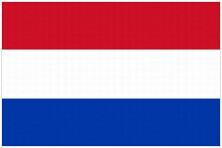
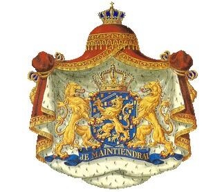
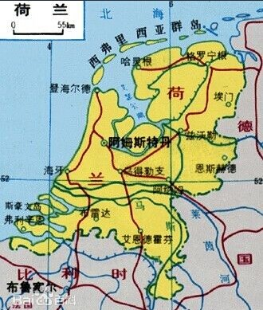

- 荷兰国旗
- 荷兰国徽
- 荷兰标志性建筑
- 荷兰地理位置
荷兰概况
荷兰是位于欧洲西北部的一个国家
人口概况
16,500,156(2009年中估计数), 是世界上人口密度最高的国家之一 , 它的人口密度超过400人/平方公里。80.9%以上为荷兰族, 此外还有弗里斯族。官方语言为荷兰语, 弗里斯兰省讲弗里斯语。荷兰全国人口一千六百万, 有一百万穆斯林, 是社会上最被误解的人群。荷兰居民穆斯林约占6%, 31%信奉天主教, 21%信奉基督教。 在荷兰居住着多个种族的人群。尽管如此, 纯正荷兰血统的居民仍占总人口的大多数。荷兰是世界上平均身高最高的国家,荷兰居民平均身高为(包括移民的外国人)男182.5 , 女172 。曾有亚洲人到荷兰常因够不着汽车扶手, 坐在坐便器脚够不着地而闹笑话。在2001年4月1日, 荷兰成为第一个法律认可同性婚姻的国家。2002年4月1日, 荷兰认可安乐死合法。另外, 荷兰全境吸毒合法化, 但是这里所说的毒品仅限于大麻, 更加致命的毒品(比如海洛因)也是不合法的。
荷兰经济
荷兰是发达的资本主义国家, 西方十大经济之一。荷兰自然资源相对贫乏, 但天然气储量丰富, 2001年开采天然气约743亿立方米, 自给有余, 还能出口。荷工业发达, 主要工业部门有食品加工、石油化工、冶金、机械制造、电子、钢铁、造船、印刷、钻石加工等, 原料和销售市场主要依靠国外。近20年来重视发展空间、微电子、生物工程等高技术产业, 传统工业主要是造船、冶金等。鹿特丹是欧洲最大的炼油中心。荷兰是世界主要造船国家之一。荷兰的农业也发达, 是世界第三大农产品出口国。(其他三国是；丹麦 澳大利亚 美国)农业生产现代化, 乳、肉产品供应国内有余, 是世界主要蛋、乳出口国之一。
外交关系
荷兰为欧盟和北约成员国。对外政策以欧洲为重点, 同时强调美国在欧洲的存在是欧洲安全与稳定的重要保证。主张在加强北约的同时, 西欧国家制订共同外交、安全政策以加强北约的欧洲安全支柱。
经贸往来
荷兰自古便是贸易强国，在17世纪上半叶有“海上马车夫”之称，首都阿姆斯特丹在当时的地位可与当今的纽约相提并论。时至今日，荷兰在对外贸易方面仍处于世界领先地位，荷兰是仅次于美国的第二大农产品出口国。荷兰主要进口工业原料、原油、半成品和机械等。60%的产品供出口，主要为石油制品、电子产品、船舶和农产品等。
中国与荷兰的人员和经济交往可追溯到17世纪初。随着中国改革开放的深化和投资环境的日益改善, 中荷经贸关系有了较大发展。双方政府先后签订了包括海运、航空、经济、技术、文化在内的多种双边协定和协议。荷兰也是最早承认中华人民共和国的西方国家之一。